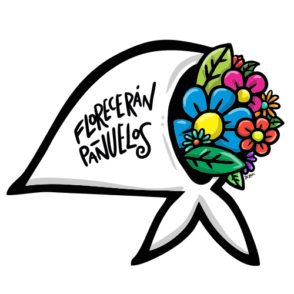
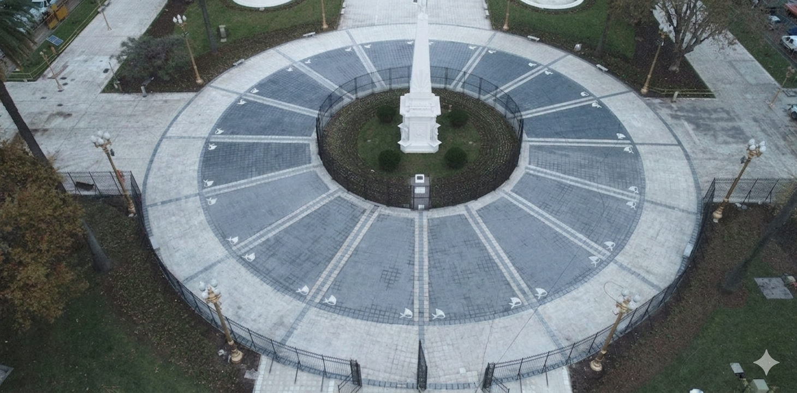

Iniciando cámara…
Iniciar experiencia
Apuntá la cámara al marker de la taza
🔊
⚙ Calibrar
✕
Calibración en vivo
Radio órbita:
0.7
Profundidad centro (Z):
-0.65
Altura centro (Y):
0
Tamaño pañuelo:
0.35
Velocidad (°/s):
40
Mostrar forma taza (debug)
Base
Radio base:
1.0
Altura base (Y):
-0.6

